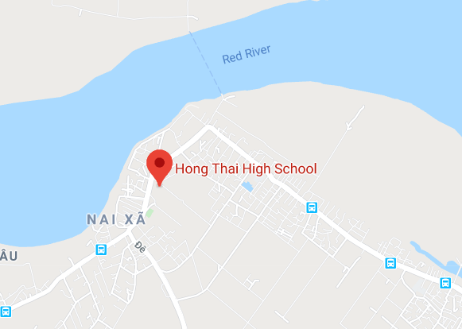

Không đỗ tốt nghiệp, được cấp chứng nhận hoàn thành chương trình GDPT?
Luật Giáo dục 2005 thể hiện bất cập khi đối với những người đã học xong chương trình THPT nhưng không dự thi hoặc dự thi không đỗ tốt nghiệp THPT thì không có quy định về hình thức công nhận hoàn thành chương trình GDPT cho học sinh. Luật Giáo dục chưa phân biệt giữa công nhận hoàn thành chương trình THPT và bằng tốt nghiệp THPT.
Góp ý dự thảo Luật Giáo dục (sửa đổi), Vụ Pháp chế (Bộ GDĐT) tổng hợp ý kiến góp ý của nhân dân cho thấy, cơ bản có ba loại ý kiến về vấn đề này.
Trong đó, đa số ý kiến nhất trí với Điều 32 dự thảo Luật khi bổ sung quy định: Học sinh học hết chương trình THPT nếu đủ điều kiện dự thi theo quy định của Bộ trưởng Bộ GDĐT nhưng không dự thi hoặc thi không đạt yêu cầu thì được hiệu trưởng nhà trường cấp giấy chứng nhận hoàn thành chương trình GDPT. Bên cạnh đó, đề xuất sửa đổi, bổ sung quy định tương ứng trong Luật Giáo dục nghề nghiệp.
Em đăng ký 5 nguyện vọng xét tuyển của 3 trường ĐH khác nhau. Sau khi biết điểm, em muốn thay đổi thứ tự nguyện vọng hoặc bổ sung thêm trường xét tuyển thì làm thế nào? (vohoangthanh…@gmail.com)
Sau khi có kết quả thi THPT quốc gia, mỗi thí sinh chỉ được điều chỉnh đăng ký xét tuyển 1 lần trong thời gian quy định và chỉ được sử dụng một trong hai phương thức: trực tuyến hoặc bằng phiếu đăng ký.
Để thay đổi trường, nguyện vọng không có trong phiếu đăng ký dự thi lúc đầu, thí sinh phải điều chỉnh bằng phiếu đăng ký xét tuyển.
Thí sinh được điều chỉnh tăng thêm số lượng nguyện vọng so với số lượng nguyện vọng đã đăng ký ban đầu trong phiếu đăng ký dự thi và phải nộp bổ sung lệ phí cho số nguyện vọng tăng thêm theo quy định.
Thí sinh phải điền đầy đủ thông tin vào phiếu đăng ký xét tuyển và gửi trực tiếp về điểm thu nhận hồ sơ. Thí sinh ghi đúng mã trường, mã ngành/nhóm ngành, mã tổ hợp xét tuyển theo quy định của trường. Nguyện vọng nào ghi không đúng sẽ không được hệ thống phần mềm chấp nhận và bị loại.
Con tôi học lực 3 môn toán, văn và tiếng Anh không giỏi đồng đều và đang cân nhắc chọn ngành ngôn ngữ Nhật. Tuy nhiên tôi băn khoăn về khả năng trúng tuyển và không biết nên sắp xếp thứ tự nguyện vọng của ngành yêu thích hơn hay ngành có điểm chuẩn các năm trước cao hơn. Nếu đã đăng ký nhưng kết quả thi không như mong đợi thì có được sửa sai không, ngoài điểm thi thì còn cách nào có thể nộp hồ sơ để được học được ngành này không? (Võ Duy, phụ huynh HS Trường THPT Nguyễn Thị Minh Khai, TP.HCM)
Ngành ngôn ngữ Nhật đang được đào tạo ở nhiều trường ĐH khác nhau như: Sư phạm TP.HCM, Mở TP.HCM, Công nghệ TP.HCM… Riêng tại Trường ĐH Khoa học xã hội và nhân văn TP.HCM, thí sinh có học lực khá trở lên sẽ có cơ hội trúng tuyển vào ngành ngôn ngữ Nhật (trung bình 7,5-8 điểm chuẩn/môn).
Về sắp xếp các nguyện vọng khi điền thông tin đăng ký xét tuyển cần lưu ý thứ tự ưu tiên. Theo quy chế, thí sinh được đăng ký không giới hạn nguyện vọng vào các trường nhưng chỉ có 1 cơ hội trúng tuyển duy nhất. Trong cùng đợt 1, các thí sinh đăng ký bằng thứ tự nguyện vọng khác nhau vào cùng 1 ngành sẽ được xét trúng tuyển như nhau.
Em học ngành công nghệ thực phẩm, muốn tìm công việc liên quan để nâng cao kiến thức và tích lũy kinh nghiệm. Em nên ứng tuyển vào vị trí nào trong nhà máy (không lương cũng được)? (Yen Nguyen)
Chị Nguyễn Thị Bích Trân – Trưởng Phòng tuyển dụng Masan Nutri-Science, tư vấn:
Bạn học ngành công nghệ thực phẩm, có thể ứng tuyển vào rất nhiều vị trí ở khối nhà máy như:
Kiểm soát chất lương (QC): Phụ trách đánh giá, kiểm soát chất lượng nguyên liệu, sản phẩm trên dây chuyền sản xuất và trên thành phẩm cuối cùng.
Đảm bảo chất lượng (QA): Đảm bảo chất lượng sản phẩm thông qua hệ thống quản lý, thường sẽ được làm nhiều với các tiêu chuẩn hệ thống như: HACCP, ISO 22000.
Nghiên cứu và phát triển sản phẩm (R&D): Nghiên cứu thành phần, công thức và phát triển sản phẩm mới theo nhu cầu của thị trường.
Để phát triển lâu dài ở các vị trí này, bạn cần giỏi tiếng Anh vì quá trình làm việc phải tiếp xúc nhiều với tiêu chuẩn mới, giỏi tiếng Anh sẽ giúp bạn học hỏi nhiều kiến thức mới trên thế giới để thử nghiệm và áp dụng cho công ty mình.
Riêng công việc R&D yêu cầu bạn mạnh về kỹ thuật và cũng khá thú vị vì đòi hỏi bạn phải là người có tư duy tốt, linh hoạt, tương tác nhiều với bộ phận marketing, sales, mua nguyên liệu… Đây cũng là bộ phận khá then chốt của các công ty vì nắm giữ công thức của sản phẩm.
THPT HỒNG THÁI
Cụm 8 - Xã Hồng Hà - Huyện Đan Phượng - TP Hà Nội
Email: c3hongthai@hanoi.edu.vn
Điện thoại: 02433.817.259
BẢN ĐỒ CHỈ DẪN
